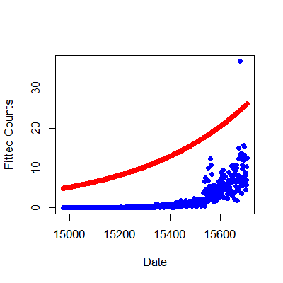

- Many data take the form of counts
- Calls to a call center
- Number of flu cases in an area
- Number of cars that cross a bridge
- Data may also be in the form of rates
- Percent of children passing a test
- Percent of hits to a website from a country
- Linear regression with transformation is an option
Count outcomes, Poisson GLMs
Regression Models
Brian Caffo, Jeffrey Leek, Roger Peng
Johns Hopkins Bloomberg School of Public Health
Key ideas
Poisson distribution
- The Poisson distribution is a useful model for counts and rates
- Here a rate is count per some monitoring time
- Some examples uses of the Poisson distribution
- Modeling web traffic hits
- Incidence rates
- Approximating binomial probabilities with small \(p\) and large \(n\)
- Analyzing contigency table data
The Poisson mass function
- \(X \sim Poisson(t\lambda)\) if \[ P(X = x) = \frac{(t\lambda)^x e^{-t\lambda}}{x!} \] For \(x = 0, 1, \ldots\).
- The mean of the Poisson is \(E[X] = t\lambda\), thus \(E[X / t] = \lambda\)
- The variance of the Poisson is \(Var(X) = t\lambda\).
- The Poisson tends to a normal as \(t\lambda\) gets large.
par(mfrow = c(1, 3))
plot(0 : 10, dpois(0 : 10, lambda = 2), type = "h", frame = FALSE)
plot(0 : 20, dpois(0 : 20, lambda = 10), type = "h", frame = FALSE)
plot(0 : 200, dpois(0 : 200, lambda = 100), type = "h", frame = FALSE)

Poisson distribution
Sort of, showing that the mean and variance are equal
x <- 0 : 10000; lambda = 3
mu <- sum(x * dpois(x, lambda = lambda))
sigmasq <- sum((x - mu)^2 * dpois(x, lambda = lambda))
c(mu, sigmasq)
[1] 3 3
Example: Leek Group Website Traffic
- Consider the daily counts to Jeff Leek's web site
http://biostat.jhsph.edu/~jleek/
- Since the unit of time is always one day, set \(t = 1\) and then the Poisson mean is interpretted as web hits per day. (If we set \(t = 24\), it would be web hits per hour).
Website data
download.file("https://dl.dropboxusercontent.com/u/7710864/data/gaData.rda",destfile="./data/gaData.rda",method="curl")
load("./data/gaData.rda")
gaData$julian <- julian(gaData$date)
head(gaData)
date visits simplystats julian
1 2011-01-01 0 0 14975
2 2011-01-02 0 0 14976
3 2011-01-03 0 0 14977
4 2011-01-04 0 0 14978
5 2011-01-05 0 0 14979
6 2011-01-06 0 0 14980
Plot data
plot(gaData$julian,gaData$visits,pch=19,col="darkgrey",xlab="Julian",ylab="Visits")
Linear regression
\[ NH_i = b_0 + b_1 JD_i + e_i \]
\(NH_i\) - number of hits to the website
\(JD_i\) - day of the year (Julian day)
\(b_0\) - number of hits on Julian day 0 (1970-01-01)
\(b_1\) - increase in number of hits per unit day
\(e_i\) - variation due to everything we didn't measure
Linear regression line
plot(gaData$julian,gaData$visits,pch=19,col="darkgrey",xlab="Julian",ylab="Visits")
lm1 <- lm(gaData$visits ~ gaData$julian)
abline(lm1,col="red",lwd=3)

Aside, taking the log of the outcome
- Taking the natural log of the outcome has a specific interpretation.
- Consider the model
\[ \log(NH_i) = b_0 + b_1 JD_i + e_i \]
\(NH_i\) - number of hits to the website
\(JD_i\) - day of the year (Julian day)
\(b_0\) - log number of hits on Julian day 0 (1970-01-01)
\(b_1\) - increase in log number of hits per unit day
\(e_i\) - variation due to everything we didn't measure
Exponentiating coefficients
- \(e^{E[\log(Y)]}\) geometric mean of \(Y\).
- With no covariates, this is estimated by \(e^{\frac{1}{n}\sum_{i=1}^n \log(y_i)} = (\prod_{i=1}^n y_i)^{1/n}\)
- When you take the natural log of outcomes and fit a regression model, your exponentiated coefficients estimate things about geometric means.
- \(e^{\beta_0}\) estimated geometric mean hits on day 0
- \(e^{\beta_1}\) estimated relative increase or decrease in geometric mean hits per day
- There's a problem with logs with you have zero counts, adding a constant works
round(exp(coef(lm(I(log(gaData$visits + 1)) ~ gaData$julian))), 5)
(Intercept) gaData$julian
0.000 1.002
Linear vs. Poisson regression
Linear
\[ NH_i = b_0 + b_1 JD_i + e_i \]
or
\[ E[NH_i | JD_i, b_0, b_1] = b_0 + b_1 JD_i\]
Poisson/log-linear
\[ \log\left(E[NH_i | JD_i, b_0, b_1]\right) = b_0 + b_1 JD_i \]
or
\[ E[NH_i | JD_i, b_0, b_1] = \exp\left(b_0 + b_1 JD_i\right) \]
Multiplicative differences
\[ E[NH_i | JD_i, b_0, b_1] = \exp\left(b_0 + b_1 JD_i\right) \]
\[ E[NH_i | JD_i, b_0, b_1] = \exp\left(b_0 \right)\exp\left(b_1 JD_i\right) \]
If \(JD_i\) is increased by one unit, \(E[NH_i | JD_i, b_0, b_1]\) is multiplied by \(\exp\left(b_1\right)\)
Poisson regression in R
plot(gaData$julian,gaData$visits,pch=19,col="darkgrey",xlab="Julian",ylab="Visits")
glm1 <- glm(gaData$visits ~ gaData$julian,family="poisson")
abline(lm1,col="red",lwd=3); lines(gaData$julian,glm1$fitted,col="blue",lwd=3)

Mean-variance relationship?
plot(glm1$fitted,glm1$residuals,pch=19,col="grey",ylab="Residuals",xlab="Fitted")
Model agnostic standard errors
library(sandwich)
confint.agnostic <- function (object, parm, level = 0.95, ...)
{
cf <- coef(object); pnames <- names(cf)
if (missing(parm))
parm <- pnames
else if (is.numeric(parm))
parm <- pnames[parm]
a <- (1 - level)/2; a <- c(a, 1 - a)
pct <- stats:::format.perc(a, 3)
fac <- qnorm(a)
ci <- array(NA, dim = c(length(parm), 2L), dimnames = list(parm,
pct))
ses <- sqrt(diag(sandwich::vcovHC(object)))[parm]
ci[] <- cf[parm] + ses %o% fac
ci
}
http://stackoverflow.com/questions/3817182/vcovhc-and-confidence-interval
Estimating confidence intervals
confint(glm1)
2.5 % 97.5 %
(Intercept) -34.34658 -31.159716
gaData$julian 0.00219 0.002396
confint.agnostic(glm1)
2.5 % 97.5 %
(Intercept) -36.362675 -29.136997
gaData$julian 0.002058 0.002528
Rates
\[ E[NHSS_i | JD_i, b_0, b_1]/NH_i = \exp\left(b_0 + b_1 JD_i\right) \]
\[ \log\left(E[NHSS_i | JD_i, b_0, b_1]\right) - \log(NH_i) = b_0 + b_1 JD_i \]
\[ \log\left(E[NHSS_i | JD_i, b_0, b_1]\right) = \log(NH_i) + b_0 + b_1 JD_i \]
Fitting rates in R
glm2 <- glm(gaData$simplystats ~ julian(gaData$date),offset=log(visits+1),
family="poisson",data=gaData)
plot(julian(gaData$date),glm2$fitted,col="blue",pch=19,xlab="Date",ylab="Fitted Counts")
points(julian(gaData$date),glm1$fitted,col="red",pch=19)

Fitting rates in R
glm2 <- glm(gaData$simplystats ~ julian(gaData$date),offset=log(visits+1),
family="poisson",data=gaData)
plot(julian(gaData$date),gaData$simplystats/(gaData$visits+1),col="grey",xlab="Date",
ylab="Fitted Rates",pch=19)
lines(julian(gaData$date),glm2$fitted/(gaData$visits+1),col="blue",lwd=3)
More information
- Log-linear models and multiway tables
- Wikipedia on Poisson regression, Wikipedia on overdispersion
- Regression models for count data in R
- pscl package - the function zeroinfl fits zero inflated models.